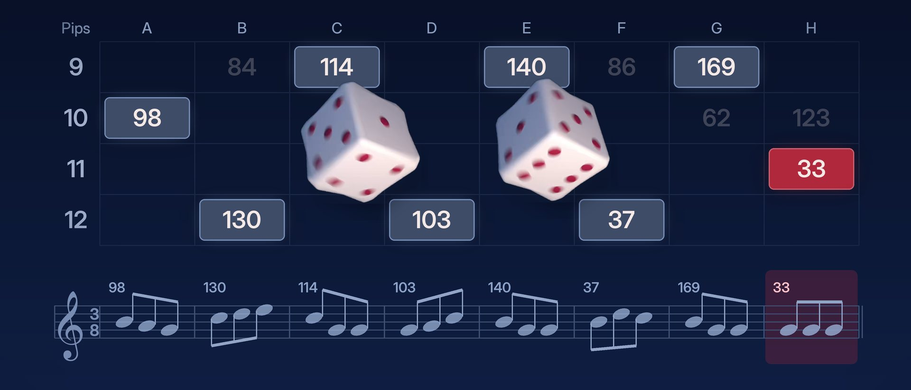
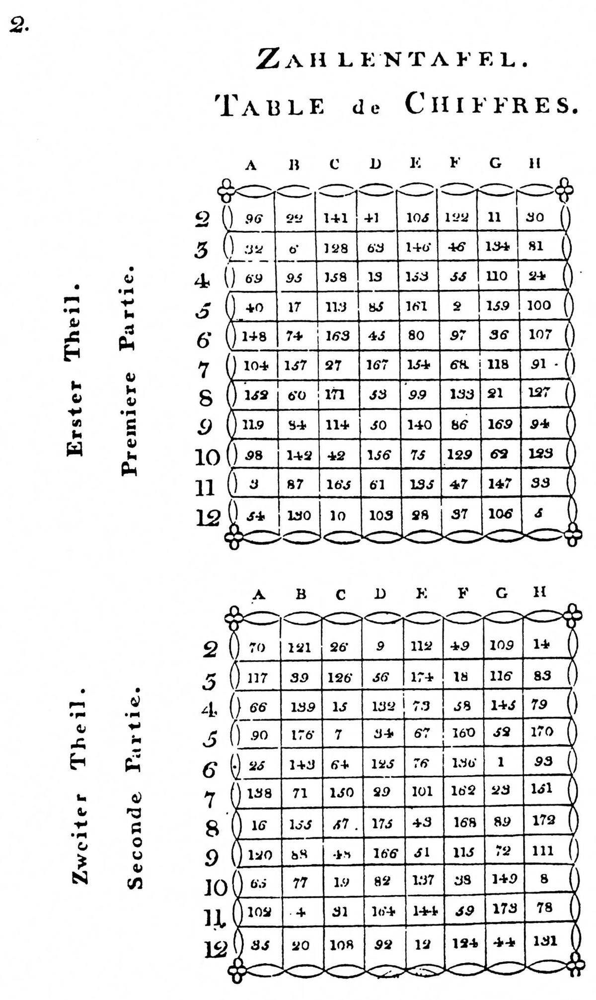
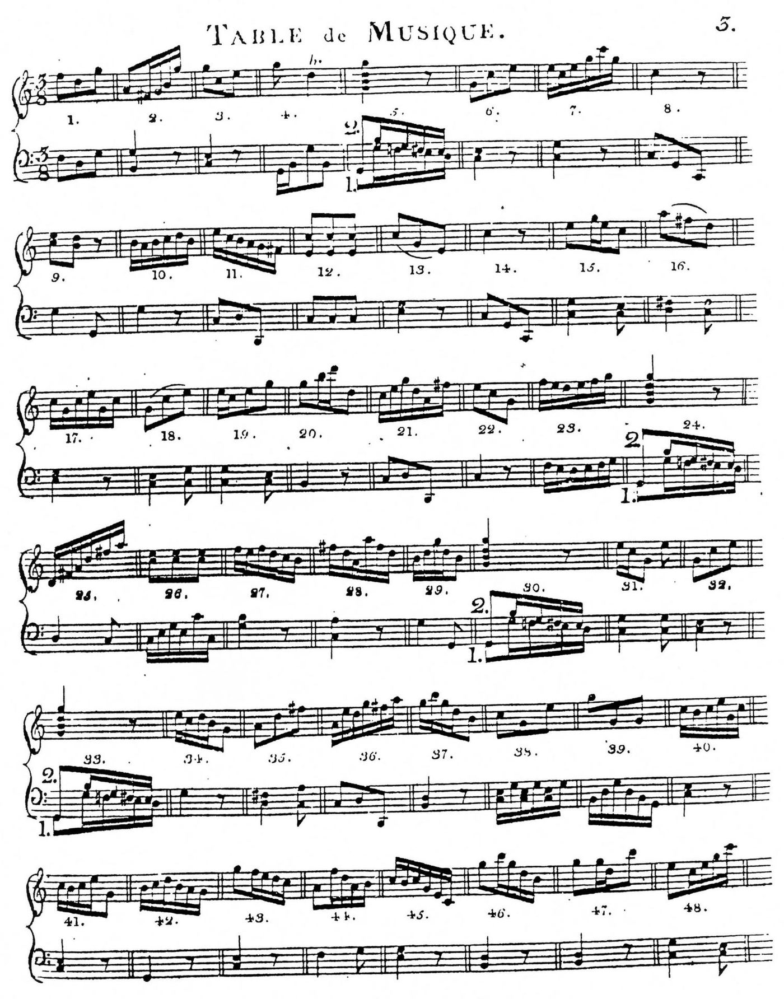

Voor een zaal, een klas of thuis
Zestien worpen met twee dobbelstenen. Een tabel uit 1793 wijst bij elke worp een maat aan. Wat er klinkt, heeft nog niemand gehoord.
Zestien mensen gooien elk één keer, of één paar dobbelstenen gaat de kring rond. Noteer de zestien sommen op volgorde.
Open in de app Mozart, kies "Zo werkt het" en dan "Voer je eigen worp in". Je tikt per worp de cel van de gegooide som aan. Een fout herstel je met een tik op de goede cel.
Na de zestiende som staat de bladmuziek klaar, op de iPhone of groot op een iPad op de lessenaar.
Een pianist speelt het van blad, of de app speelt het zelf, op piano, klavecimbel of een van de andere instrumenten.
Je hebt nodig: twee dobbelstenen, een iPhone of iPad met de app, en drie tot vier minuten. Het menuet onder Mozarts naam is gratis in de app.
Zestien mensen krijgen een bakje met twee dobbelstenen en gooien tegelijk. De presentator loopt de rij langs en noemt de sommen. De pianist speelt het stuk een halve minuut later.
Elk groepje gooit een eigen stuk en vergelijkt het met dat van de buren. Waarom klinkt elke worp goed? Wat blijft gelijk, en wat verandert?
Gooi aan tafel, tik de worp in en bewaar het stuk als bladmuziek, audio of MIDI. Elke gast gaat met een eigen menuet naar huis.
Het Musikalisches Würfelspiel verscheen in 1793 in Bonn, twee jaar na Mozarts dood, onder zijn naam. Of hij het zelf schreef, is niet bewezen. De druk bestaat uit een tabel met getallen en pagina's met genummerde maten. De app gebruikt die tabel en die maten, zonder dat er een noot is veranderd.


Roll Over Mozart speelt vier gedrukte dobbelspellen uit de achttiende eeuw. Je eigen worp invoeren kan vanaf versie 1.3, bij het menuet onder Mozarts naam. Voor iPhone en iPad met iOS 26.2 of nieuwer.
Wil je dit doen met een zaal of een klas en heb je een vraag? Mail naar aleatormusichome@gmail.com.